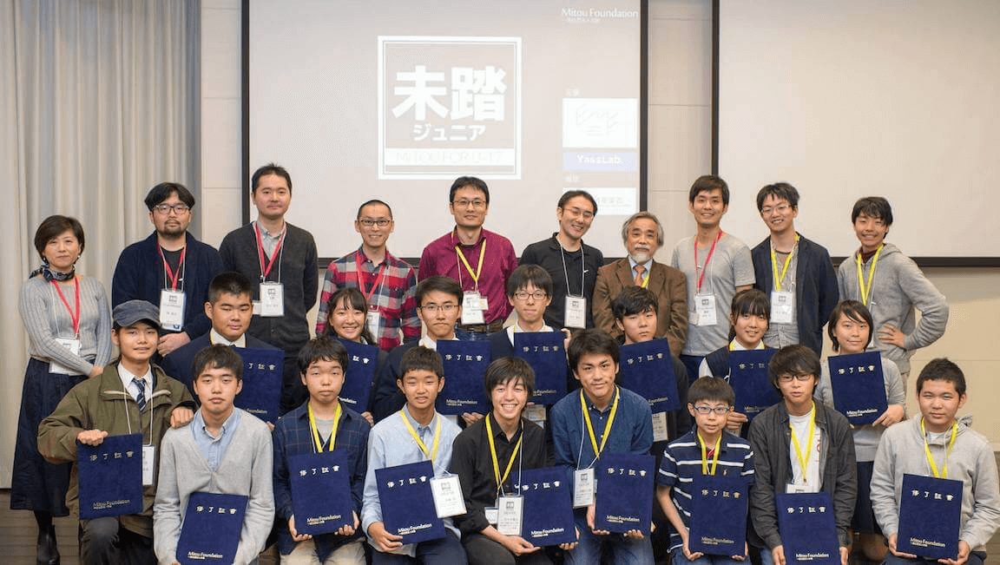

2017年度は、41件の応募中、11プロジェクト17人を採択しました。
以下のクリエータは、未踏ジュニアスーパークリエータに認定されました。
菅野 楓 (narratica〜ストーリーコンサルタント〜)
加藤 周 (DrawCode 〜ブロックをつなげて自由にHTMLを描こう〜)
大野 智葵 (FRPの概念に触れられるビジュアルプログラミング言語の開発)
鈴木 颯介 (FRPの概念に触れられるビジュアルプログラミング言語の開発)
佐々木 雅斗, 周藤 光太郎 (関PM)
カラオケで歌った曲、見た映画等の経験に基づいて、AppleMusicから曲を推薦する新しい仕組みのiOSアプリを開発
昔聴いていた曲をあまり聴かなくなったのでは、という問題意識から思い出から音楽を聴くサービスを作ろうというプロジェクト。理想をどのようにプロダクトに落とし込んでいくか、そしてどのように作るかということを実地で学んでいた。リリースをまで到達できなかったので、そこは今後の課題としてもらいたい。今回の体験を活かして世の中を変えていくようなサービスを作ることを作り出していくことを期待する。
田中 祐太朗, 中原 楊, 中川 茉奈美 (関PM)
PaPaという、学校での円滑な情報伝達を支援し、日本のIT教育に寄与することを目指したWEBアプリケーションを開発。
自分たちが通う学校のITシステムの現状に課題を感じ、その課題を解決するサービスを作りたいというプロジェクト。ほぼプログラミング未経験の状態から技術力を高め、実際にクラスの人々に使ってもらい、フィードバックを得て改善するプロセスを進めることができていた。今後はより技術力を高めながら、今回の体験を活かして世の中を変えていくようなサービスを作ることを作り出していくことを期待する。
中筋 絢香 (鵜飼PM)
WEBクイズで頑張って覚えた漢字や単語がクッキーに焼かれ、暗記学習のモチベーションアップを支援するシステムを開発。
自分自身の、「海外にいると漢字を学ぶモチベーションを保ちにくい」という経験に基づいて、オンラインの漢字テストでがんばって覚えた漢字をレーザーカッターを利用してクッキーに焼くことで、楽しく漢字を学べるシステム「暗記クッキー」を開発した。時間が限られている中で、最低限、動く形まで持ってきたことは評価できるので、今後もこの非常に良いアイデアの可能性を広げることにチャレンジしてほしい。
菅野 楓 (米辻PM)
自然言語処理によって、映画脚本のテキスト分析を行い、登場人物の感情変化をもとにストーリーを評価。自分で書いた文章もリアルタイムに感情分析。
スマホアプリ等の開発経験を持っていた事、ストーリーの解析という難しいテーマに対し形態素解析という技術的なアプローチを提案出来ていた事から採択。期間中にサーバサイドでのシナリオ形態の素解析プログラム、クライアントサイドでの感情グラフ化等を実現し、実際に幾つかのシナリオについて分析する事ができた事を高く評価したい。将来性の高いテーマなので、これからの発展に期待したい。
矢野 礼伊 (米辻PM)
老人宅の玄関に、見守り装置を設置し、介護者から見守れるようにするシステム。見守り装置は、カメラ及び各種センサを装備し、サーバーを介してWeb経由で介護者が随時様子を知ることができる。
祖父を見守りたいというモチベーションで、マイコンを用いてセンサやカメラデータを取得し、サーバサイドでデータベース化およびグラフ化、さらに機械学習を用いた取得画像の分類を行った。 電子工作、サーバ、クライアントと非常に広範な開発をこなす高い技術力を評価して採択。期待以上のエンジニアリング能力を発揮してくれた。これからもその開発力を色々な所で活かして貰いたい。
霜田 哲之介 (寺本PM)
困っている訪日外国人が、旅行者を助けたい日本人に質問できるアプリケーションを開発。
訪日外国人ともっと上手くコミュニケーションをとることで、外国人が抱えるなんらかの問題を解決しようという試みである。プロジェクト開始前から空港でアンケートをとるなど意気込みは十分であった。アプリの方は、初めて触る言語での開発だったが、期間中にコツコツ学び続けてプロトタイプを完成させた。そういう意味では、今回はプロジェクトは彼の自信にも繋がったと思われる。これからも持ち前の行動力を活かしていって欲しい。
加藤 周 (寺本PM)
コードが書かれたブロックをつなげていくだけでサイトが作れ、さらにコードも書けるようになる初学者向けのサービスを開発。
プログラミング教材は今まさに群雄割拠である。彼は自身の原体験をもとに、テキストプログラミングに移行しやすいブロックプログラミングの形を模索した。今回のプロジェクトで、プログラムの表現方法を考えるだけでなく、実装して実際にユーザに使ってもらったことは高く評価できる。また、彼自身がさらにプログラミングを学ぶことによって、編み出せるアイデアは大いに広がるだろう。今後も時間の許す限り色々な物を作って欲しい。
根本 真響 (笹田PM)
日本語、英語、中国語の3言語で利用できる、音声認識機能を搭載したキーボード。
根本さんは、音声認識機能を持つ「聞くキーボード」を、ラズパイを用いて開発した。日本語だけでなく、英語と中国語のデモを行ったのはファインプレイだった。多くの箇所で既存のソフトウェアやサービスを使っているため、本質的に困難な箇所はないが、うまく組み合わせ、使える状態にして公開できたのは大きく評価できる。欲を言えば、キーボードをより活用する提案ができると良かった。改善すべき点も多いが、それも含め、未踏ジュニア期間に体験したことを糧に今後も活躍して欲しい。
山田 陽大, 足立 素音, 田島 融樹, 出川 大和 (西尾PM)
プログラミング不要でIoTデバイスをカスタマイズできるシステムを開発。
書類上は山田さんがチームリーダーだが、実質的には足立さんがメインのプロジェクト。足立さんはIoTデバイスをプログラミングなしで使えるようにすることで、よりIoTの普及した世界が訪れることを目的とし、ソフトウェア開発に挑戦した。残念ながら成果報告会でデモを見ることはできなかったが、Raspberry Piの上でWebサービスを動かし、ユーザはプログラムレスで、人感センサの入力をTweetするなどの設定をブラウザ上で行うことができる。何でも自分でやりたいのか、あまりPMに対して報告・連絡・相談をしてくれなかったのが残念である。
大野 智葵, 鈴木 颯介 (安川PM)
配置したGUI要素を線で繋いでいくことでアプリケーションを作っていけるビジュアルプログラミング言語を開発。
大野さんと鈴木さんは二人とも十分な開発経験を既に持っており、期間中はプロダクト開発手法を作りながら学ぶことに終始フォーカスできた。今回開発した「vamboo」をリリースさせ、ユーザーテストも行い、OSS として英語で公開した成果には「未来の当たり前」を感じさせられた。未踏コミュニティをうまく活用して、今後は僕らの理解できない未踏の領域を切り開いて欲しい。
大塚 嶺 (鈴木PM)
視力が低下したお年寄りから子どもまでが楽にニュース記事を読めるアプリ。文字の表示の工夫、読み進めた部分のマーキング、視線追跡などの機能を搭載。
視力の低下で新聞が読みにくくなった人を助けるアプリを開発しました。開発にあたって、新しいプログラミング言語や視線追跡デバイスの使い方、スライドのデザインなどの技術を楽しみながら学び、自分のものにしていきました。プロジェクトの中盤にはユーザテストを行い、実際の使用者と対話をしながらインタフェースを改良しました。このような進め方は人の役に立つアプリを作るうえで大切です。今回技術的に難しく実現できなかった一部の機能は、今後開発の経験を深めていく中で解決方法を見つけられるでしょう。